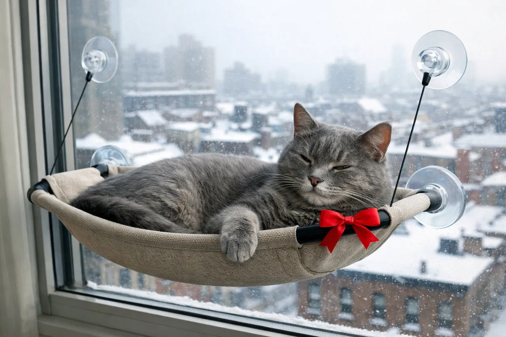
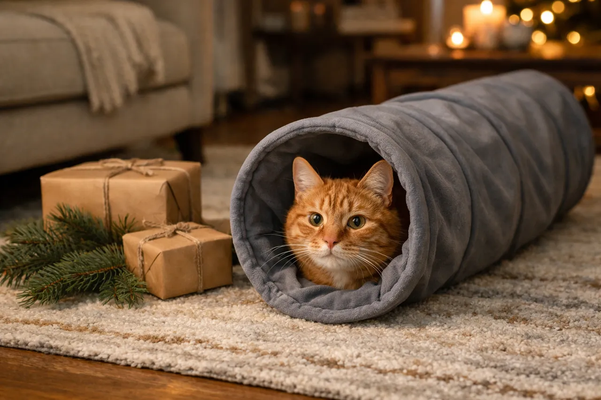
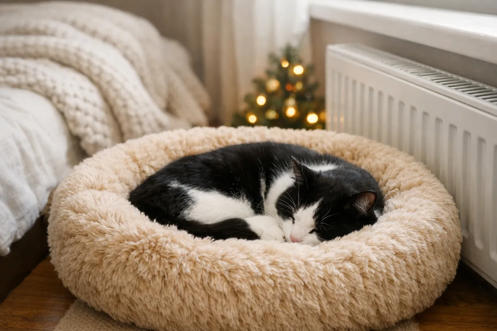

Cadeau de Noël pour chat d’appartement : 3 idées vraiment utiles

Ton chat ne sait pas que c’est Noël, mais il profitera très bien d’un cadeau bien choisi. En appartement, le bon cadeau n’est pas un gadget qui finit sous le canapé au bout de deux jours : c’est un objet qui lui offre un poste d’observation, un endroit pour jouer ou un coin chaud pour dormir. Voici trois idées qui servent toute l’année, prennent peu de place et restent dans un budget raisonnable.
Comment choisir un cadeau pour un chat d’intérieur
- Pense à ses habitudes : un chat qui passe ses journées à la fenêtre, un chat joueur qui court partout ou un chat frileux qui cherche le radiateur n’auront pas le même cadeau idéal.
- Vérifie la place : dans un petit appartement, privilégie ce qui se fixe en hauteur, se plie ou se range facilement.
- Regarde les matières : coutures solides, tissu lavable, pas de petites pièces qui se détachent facilement.
- Garde le cadeau simple : un objet que ton chat utilise tous les jours vaut mieux que trois jouets qu’il ignore.
1. Le hamac de fenêtre à ventouses

Le poste d’observation qui ne prend aucune place au sol
Un hamac qui se fixe directement sur la vitre donne à ton chat une vue imprenable sur la rue, les oiseaux et les passants. C’est souvent le cadeau qui a le plus de succès chez les chats d’intérieur, et il ne mange pas un centimètre de ton salon. Vérifie la charge maximale annoncée, nettoie bien la vitre avant de poser les ventouses et contrôle leur tenue de temps en temps. Si ta fenêtre ne s’y prête pas, il existe des modèles qui s’accrochent au rebord ou au radiateur.
Voir sur Amazon : hamacs de fenêtre2. Le tunnel pliable pour chat

Le terrain de jeu qui se range dans un tiroir
Un tunnel en tissu, c’est une cachette, un parcours et un jeu de cache-cache en un seul objet. Ton chat s’y cache, en ressort pour attraper une plume, s’y endort parfois. Replié, il tient à plat derrière un meuble, ce qui est idéal quand l’espace est compté. Choisis un tissu épais qui résiste aux griffes, et un modèle à plusieurs entrées si tu as deux chats. Ajoute une ficelle ou un petit jouet à l’intérieur pour relancer son intérêt.
Voir sur Amazon : tunnels pour chat3. Le coussin autochauffant

Le coin douillet de l’hiver, sans prise électrique
Un coussin autochauffant contient une couche isolante qui renvoie la chaleur du corps de ton chat. Pas de câble, pas de consommation électrique, rien à surveiller. Les modèles ronds à bords relevés plaisent beaucoup aux chats qui aiment dormir en boule. Place-le dans un endroit calme, à l’abri des courants d’air, par exemple près d’une fenêtre ensoleillée ou à côté du radiateur. Vérifie que la housse se retire et passe en machine.
Voir sur Amazon : coussins autochauffantsQuel cadeau pour quel chat ?
| Profil de ton chat | Cadeau conseillé | Point d’attention |
|---|---|---|
| Passe ses journées à la fenêtre | Hamac de fenêtre | Charge maximale et tenue des ventouses |
| Joueur, plein d’énergie | Tunnel pliable | Tissu épais et solide |
| Frileux, adore dormir | Coussin autochauffant | Housse lavable |
| Deux chats à la maison | Tunnel à plusieurs entrées | Assez de place pour deux |
Nos astuces pour un Noël tranquille avec ton chat
- Offre le cadeau sans emballage, ou retire vite les rubans et les ficelles : ce ne sont pas des jouets à laisser à sa portée.
- Pose le nouvel objet là où ton chat a déjà ses habitudes, et laisse-le l’explorer à son rythme.
- Fixe bien le sapin et garde guirlandes, boules fragiles et plantes de saison hors de sa portée.
- Si tu pars pendant les fêtes, prépare son séjour avec notre guide chat seul en appartement pendant les vacances de Noël.
- Pour un chat qui s’ennuie quand tu es absent, vois aussi notre sélection de jouets interactifs.
FAQ
Quel est le meilleur cadeau de Noël pour un chat d’appartement ?
Celui qu’il utilisera tous les jours. Pour la plupart des chats d’intérieur, un hamac de fenêtre ou un coussin douillet a plus de succès qu’un jouet gadget, parce qu’il répond à un besoin quotidien : observer ou dormir au chaud.
Un hamac à ventouses tient-il vraiment sur une vitre ?
Oui, si la vitre est propre et lisse et que tu respectes la charge maximale annoncée. Appuie bien sur chaque ventouse à la pose, puis vérifie leur tenue régulièrement, surtout avec un chat lourd ou quand il fait très froid.
Mon chat ignore son cadeau, que faire ?
Laisse-lui du temps. Déplace l’objet vers un endroit qu’il fréquente déjà, mets-y un vêtement qui porte ton odeur ou une friandise, et joue avec lui autour. Beaucoup de chats adoptent un nouvel objet après quelques jours.
Quel budget prévoir pour un cadeau de chat ?
Ces trois idées se trouvent généralement dans une fourchette raisonnable, souvent entre 15 et 40 €. Les prix changent souvent, vérifie-les sur la page du vendeur.
Notre avis
Si tu ne dois offrir qu’un seul cadeau, le hamac de fenêtre est souvent celui qui plaît le plus à un chat d’intérieur, sans prendre de place au sol. Pour un chat joueur, le tunnel pliable est un excellent choix à petit prix, et pour un chat frileux, le coussin autochauffant devient vite son endroit préféré de l’hiver. Pour compléter l’équipement, vois notre guide arbre à chat pour petit appartement.
Liens affiliés Amazon : une commission peut être versée, sans surcoût pour toi.